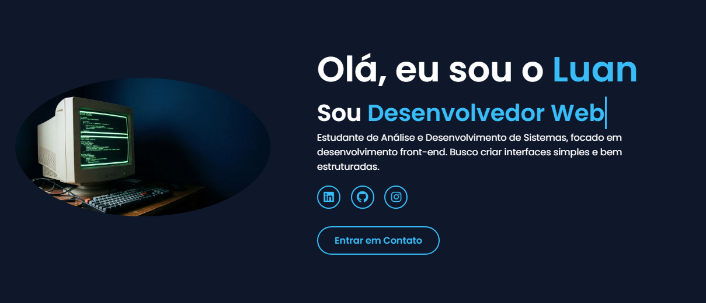
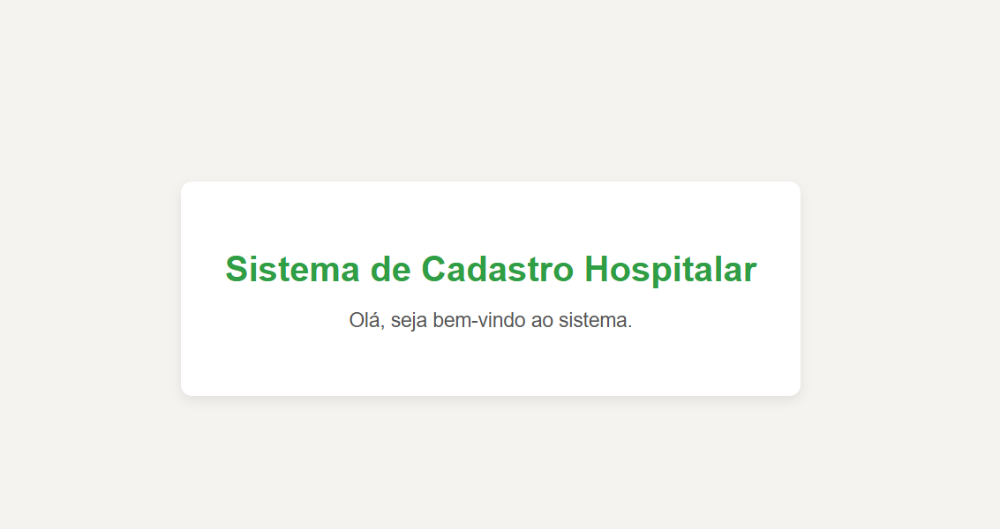

Sistema web de cadastro hospitalar desenvolvido com Django para gerenciamento de pacientes, médicos e consultas.
Desenvolvimento de uma Landing Page profissional focada em vendas e captura de leads para o nicho de educação/ idiomas.